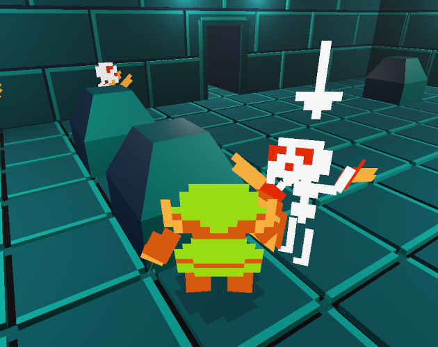
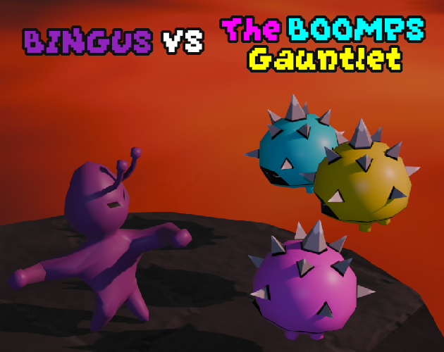
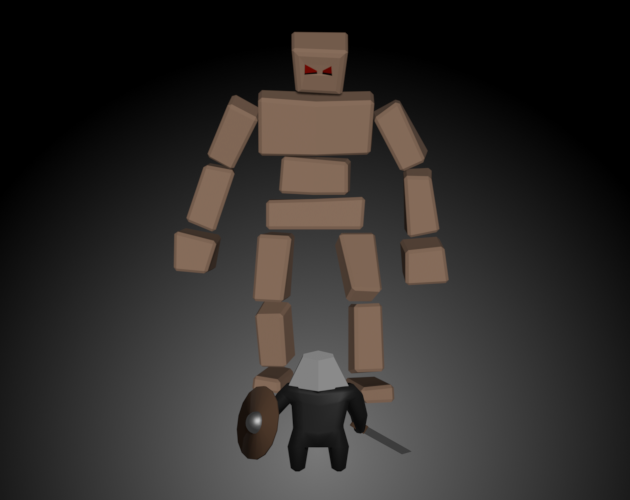

I have been developing games since I was in the 8th grade. In October of 2025, I left my job to pursue a career in game development. Below is a list of games I have worked on recently. All of them were built with Godot as the game engine, Blender/Qubicle as the modeling tools, and Gimp/Pyxel Edit/Material Maker/Krita as the texturing tools.

A fan remake of the original Legend of Zelda using a unique 3D sprite effect. I have been streaming the creation of this project on YouTube as a resource for those getting into game development. I have built a community of returning viewers who look to me for advice about game development. The viewership per stream ranges from ~20 - ~750 views.
More Information
Bingus V.S. The Boomps Gauntlet is a third-person action platformer beat em' up. It was created in the span of 10 days for the Bigmode Game Jam 2026 by Evan Jamison and myself. I am currently awaiting the results of this game jam.

Tragedy of Grok the Destroyer is a wave survival game where you play as the boss. I created this game in the span of 3 days for the GMTK Game Jam 2025. With 9,555 entries this game scored in the top 15% in the Narrative, Creativity, and Enjoyment categories.
More Information-
I worked as the lead developer on a unamed 2-D metroidvania game. This game was a hand-drawn metroidvania with platform fighter combat. It drew inspiration from Hollow Knight, Zelda, Smash Brothers, and Metroid. The project has been put on pause because we have decided to change the concept to a 3-D third-person metroidvania.
- I was responsible for the creation of the player character. Including their art and character controller.
- I was also responsible for creating the ECS (Entity Component System) used in the games architecture to ennsure workflow efficiency for the team.
- I am currently responsible for the creation of a GDD (game design document) and prototype for the new 3-D iteration of this game.
-
I worked as the lead developer on Bingus V.S. The Boomps Gauntlet. This game is a third-person action platformer beat em' up made for the Bigmode Game Jam 2026.
- I was responsible for the implementation of all gameplay features. Including but not limited to the character controller, the auto-target system, the sound system, enemy ai, and cutscene sequencing.
- I was also the primary designer, leading the team to produce a single cohesive vision for the project.
- I am currently awaiting the results of the game jam. You can view and play the game here
-
I have been working on a fan remake of the original Legend of Zelda. This remake uses a unique 3-D sprite effect I developed to bring the original into the third dimension. I have been streaming the creation of this game on YouTube as an educational resource for those learning game development.
- I gained experience building large open worlds and seemless scene transitions.
- I built a robust enemy loot system that remains faithful to the original game.
- I built a dungeon system that allows me to create dungeons quickly.
- I gained experience with Global Illumination and other lighting techniques to build atmosphere in 3-D environments.
- I built large scale 3-D levels with optomized collision shapes to maintain high performance.
- I built an inventory system that allows the player to assign items to multiple buttons introduced by modern controllers.
- I built an audience of consistant viewers on YouTube interested in this project and who look to me for advice on game development. Viewership per stream ranges from ~20 views to ~750 views
-
For "Client 1" I worked as a Mid Developer on the implementation of SPM (Strategic Portfolio Management), CWM (Collaborative Work Management), and a custom portal. Leveraging flow designer, custom portal widgets, and the CWM workspace, we successfully delivered a complete and future proof system to meet the complex business needs of the client.
- Worked in an agile development team. Gaining experience creating, implementing, and testing stories. As well as bringing forward new ideas to ensure a quality product.
- For "Client 2" I worked as a Lead Developer on the creation of a custom portal for a client instance. I successfully lead the team to create a landing page, knowledge base, and a custom intake catalog item. We also implemented a custom workflow processor for the intake form that met the business needs of the client.
-
For "Client 3" I worked as a Consultant on the implementation of SAM Pro (Software Asset Management) for a client instance, gathering requirements and successfully configuring business rules to the clients needs. I also provided in-depth training on the usage of SAM Pro to the client’s software asset administrators. After the training the client was successfully able to complete their workload without guidance and with increased efficiency when compared to previous experience before the implementation.
- Administered user access, roles, and groups to ensure secure and compliant ServiceNow usage.
- Provided end-user training, documentation, and ongoing support to maximize platform adoption and value.
-
For "Client 4" I worked as a Lead developer on a form digitization effort for a client, gathering requirements on a per form basis to build a system to allow for the digitization of a wide variety of client forms with varying requirements.
- Developed workflows, business rules, client scripts, and UI policies to automate processes and improve efficiency.
-
For "IntegrityPro Consulting LLC." I worked as a Lead Developer on an internal physical security ServiceNow custom application to consolidate the various applications used by physical security personnel into a single web portal.
- Participated in upgrades, patching, and testing to maintain platform stability and performance.
- Development was focused on the service portal and gave me a solid foundation for custom portals, custom widgets, scoped apps, third party integrations, and even ServiceNow’s Mobile Studio to create custom mobile experiences for a scoped app.
- Designed and developed full-stack web applications to support institutional needs across students, faculty, and staff.
- Engineered and maintained the college-wide daily email system distributed to all students, faculty, and staff, ensuring reliability, accessibility, and streamlined content delivery.
- Built a customizable online form builder platform used campus-wide, enabling departments and organizations to create and manage digital forms efficiently.
- Developed the official Major/Minor/Concentration Declaration System, providing students with a seamless interface for academic program declarations and administrative processing.
- Collaborated with campus stakeholders to gather requirements, implement features, and deploy production-ready web solutions.
- Granted a Roanoke College IT Fellowship, where I worked part-time for the college as a Full Stack Developer ()
- Competed in intercollegiate coding competitions, representing the college against peer institutions.
- Selected for the coding competition team one year ahead of cohort peers, recognizing advanced problem-solving and programming proficiency.
-
Completed an independent study in Game Design alongside a Game Development course, where:
- Built a custom C++ game engine from the ground up.
- Designed and developed a game emphasizing refined game feel, responsiveness, and player experience.
- Starting sophmore year I was the team captain of the Roanoke College Club Baseball Team.
- Graduated with an Advanced High School Diploma, completing a rigorous academic curriculum.
- Completed all available Computer Science coursework, demonstrating sustained commitment to software development and computational problem-solving.
- Enrolled in AP Computer Science, earning a score of 5 (highest possible score) on the AP Computer Science Exam.
- Built a strong foundation in programming principles, object-oriented design, algorithms, and data structures, preparing for advanced collegiate-level computer science study.
- I was a member of the varsity baseball team and was the first recipient of the Harrison Award my senior year for outstanding service to the team.
| Language | Proficiency |
|---|---|
| C/C++ | Expert |
| Python | Expert |
| GDScript | Expert |
| Java Script | Expert |
| HTML | Expert |
| CSS | Expert |
| PHP | Expert |
| GML | Expert |
| LUA | Expert |
| Java | Novice |
| C# | Novice |
| Software/API | Proficiency |
|---|---|
| Godot | Expert |
| Git/Version Control | Expert |
| ServiceNow | Expert |
| Microsoft Office | Expert |
| Gimp | Expert |
| Krita | Expert |
| Chart.JS | Expert |
| Dragula.JS | Expert |
| Roblox Studio | Expert |
| Game Maker Studio 2 | Expert |
| Blender | Novice |
| NeoForge Minecraft Modding API | Novice |
| Unity | Novice |
| Unreal Enging | Beginner |
A metroidvania with RPG elements and platform fighter combat. Put on pause to convert to a third-person metroidvania.
Responsible for developing high quality business solutions on the ServiceNow platform for internal projects and client ServiceNow applications.
Developed web applications for Roanoke college. Works include Major Declaration, Daily Email, and Form Builder.